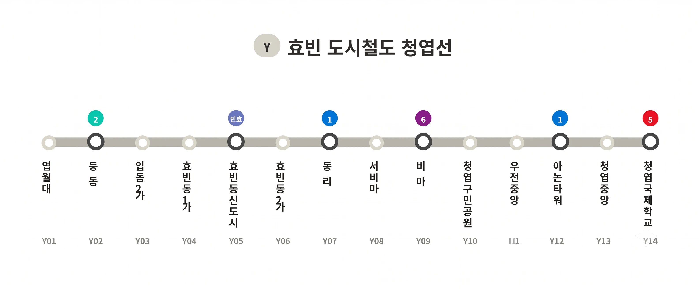

청엽선
|
|||
|
 청엽선 노선도
|
|||
| 노선 정보 | |||
|---|---|---|---|
| 노선 색상 | 베이지색 (#D6D5CA) | ||
| 운영 기관 | 효빈교통공사 (예정) | ||
| 상태 | 계획 중 (2027년 착공 예정) | ||
| 개통 예정 | 2034년 5월 | ||
| 기점 | 엽월대역 | ||
| 종점 | 청엽국제학교역 | ||
| 역 수 | 14개 | ||
| 거리 | 12.07km | ||
| 시스템 | 경전철 또는 모노레일 (미정) | ||
| 차량 | Y001호대 | ||
| 차량기지 | 미정 [1] | ||
1. 개요
"빵 굽는 향기와 서브컬처의 열기가 교차하는 청엽구의 구석구석을 감싸는 따스한 노선"
그리고 오타쿠들의 심장을 뛰게 하는 헌정용 성지순례 라인
효빈교통공사가 야심 차게 계획 중인 차세대 도시철도 노선이다. 노선 기호는 Y, 노선 색상은 차분하고 따뜻한 느낌의 베이지색(Platinum Silver, #D6D5CA)이다.
효빈시의 4대 주요 도심 중 하나이자 인구 47만 명에 육박하는 거대 자치구인 청엽구 내부를 샅샅이 관통하며, 청엽구민들의 고질적인 교통 체증을 해소하기 위해 기획되었다. 1979년 청엽구가 분리 신설된 이래, 구의 남북과 주요 상권을 촘촘하게 이어주는 사실상의 '청엽구 전용 내부 순환 노선'이나 다름없다.
기점인 엽월대학교(엽월대)부터 시작해 효빈동 신도시, 그리고 무려 지상 88층(450m)에 달하는 거대한 관종 마천루 아논타워, 종점인 청엽국제학교 등 청엽구의 주요 학군과 핵심 랜드마크를 모두 관통한다. 재미있게도 지나가는 지명들이 특정 밴드물이나 특정 아이돌물 캐릭터들의 이름과 대거 겹쳐 개통도 전부터 '서브컬처 성지순례 특화 노선'이라는 컬트적인 반향을 일으키고 있다. 이쯤 되면 노선 계획팀에 진짜 덕후가 숨어있는 게 학계의 정설이다
2. 특징 및 건설 배경
2.1. 인구 47만 명 청엽구 관통의 핵심 동맥
이 노선은 인구 470,043명(2025년 기준)을 품은 거대 자치구, 청엽구의 과거와 현재, 미래를 모두 입체적으로 관통한다. 구청장 권상남(3선) 체제하에 개발된 지역들을 이어주며, 중구 원도심과 맞닿은 입동과 효빈동 구도심의 슬럼화된 지역을 지나, 현재 한창 상전벽해로 개발 중인 효빈동 신도시를 거친다. 이후 헌이송동, 마잡동, 등동 방면의 공단 연장선을 커버하며, 청엽구 경제를 지탱하는 우전동, 우택동 일대의 거대 학원가 및 패션 상권을 완벽하게 연결한다.
특히 우전동 일대는 과거 지역 상인들의 님비로 이마트 우전점이 철수하며 침체기를 겪었으나, 최근 이케아(IKEA) 효빈점과 스타필드 효빈이 들어서는 효빈시 최대의 '메가 쇼핑 클러스터'로 천지개벽 중이다. 청엽선이 개통되면 주말마다 주차장이 되는 이 일대 교통의 숨통을 틔우고, 구민들의 소비와 출퇴근 패턴이 이 노선을 중심으로 완전히 재편될 전망이다.[2]
여담으로, 청엽구는 공식 마스코트 '빵도리'(빵을 안고 있는 참새 제빵사)를 전면에 내세울 정도로 베이커리 산업(일명 베이커리노믹스)이 극도로 발달해 있다. 관내에 1.5km에 달하는 '청엽 베이커리 거리'가 조성되어 있어, 청엽선 고가 철도를 타다 보면 창밖으로 갓 구운 빵 냄새가 진동할 것이라는 지역민들의 기분 좋은 예상이 나오고 있다.
2.2. 전 구간 지상 고가 노선
청엽구의 구도심과 신도시를 구불구불 이어야 하는 복잡한 선형의 특성상, 막대한 지하 굴착 비용을 절감하기 위해 전 구간이 지상 2층에 위치하는 고가 철도 형태로 계획되었다. 청엽구의 쾌적한 도시 미관을 고려하여 거대한 콘크리트 덩어리가 아닌 슬림한 교각을 사용하는 경전철 혹은 모노레일 시스템이 유력하게 검토되고 있다. 총 14개 역 중 무려 6개 역이 환승역(1, 2, 5, 6호선, 빈효선 광역전철)이라 지선 노선임에도 알짜배기 알토란 같은 네트워크를 자랑한다.
3. 운행 차량 및 인프라
-
효빈교통공사 Y001호대 전동차:
- 아직 구체적인 사양은 확정되지 않았으나, 노선 규격에 맞춰 경전철 혹은 모노레일 차량으로 제작될 예정이다.
- 관광 및 빵지순례 투어 목적을 겸하기 위해 와이드 파노라마 창문과 베이지색(플래티넘 실버) 계열의 포근한 시트가 적용될 것이라는 카더라가 있다.
- 편성당 량수는 청엽구 인구(47만 명)의 무지막지한 수요를 반영하여 넉넉하게 산정될 예정이다. 적어도 3~4량 1편성은 되어야 출퇴근 가축수송을 면할 것이라는 관측이 지배적이다.
4. 역 목록
환승 (주요 환승 노선):
 1호선
1호선
 2호선
2호선
 5호선
5호선
 6호선
6호선
 빈효선 광역전철
빈효선 광역전철
| 역번호 | 역명 | 한자 역명 | 거리 | 접속 노선 | 승강장 | 횡단 | 소재지 |
|---|---|---|---|---|---|---|---|
|
|||||||
|
|||||||
| (탄성지선) |
|||||||
|
|||||||
| (탄성지선) |
|||||||
|
5. 여담 및 서브컬처 성지순례 (Meme)
"지하철 문이 열리면 모카 빵 냄새가 나고, 고가 철도 창밖으론 아논타워가 보이는 곳."
노선 기획 단계부터 어째서인지 서브컬처 팬들의 열광적인 지지를 받고 있는 효빈광역시 최고의 성지순례 예정 노선이다. 효빈교통공사 측에서는 "지역 명칭을 땄을 뿐 완벽한 우연의 일치"라고 극구 부인하고 선을 그었으나, 관할 구역인 청엽구청(권상남 구청장)마저 이를 적극적인 관광 자원으로 밀어주고 있어 덕후들의 설레발은 멈추지 않고 있다.
5.1. 미아 테일러와 청엽국제학교 (미아선)
가장 널리 퍼진 밈 중 하나는 이 노선이 러브라이브! 니지가사키 학원 스쿨 아이돌 동호회의 천재 유학생 작곡가, 미아 테일러 헌정선이라는 것이다.
- 청엽선의 테마색인 베이지색(Platinum Silver, #D6D5CA)은 놀랍게도 미아 테일러의 공식 이미지 컬러 헥사코드와 완벽하게 일치한다. 이 때문에 팬덤에서는 아예 '미아선' 혹은 '베이비쨩 라인'이라고 부르기도 한다.
- 종점인 청엽국제학교역(Y14)이 미아 테일러의 '미국 출신 14세 천재', '외국인 학교' 속성과 절묘하게 맞아떨어진다. 효빈시 한정으로 미아 테일러는 '청엽선 명예 기관사 및 청엽국제학교 홍보대사'라는 비공식 직함을 달고 있다. 차내 안내방송으로 문이 닫힐 때 "Shit! 베이비쨩! 이번 역은..." 이 나올 것이라는 행복회로가 힘차게 돌아가고 있다.
- 미아 테일러가 1년 365일 달고 사는 최애 음식이 햄버거와 핫도그인 탓에, 향후 청엽국제학교역과 아논타워 주변의 햄버거 가게 매출이 개통 이후 수직 상승할 것이라는 진지한 상권 분석까지 나오는 중이다.
5.2. 엽월대학교 (하즈키 렌)
기점인 엽월대역(Y01)은 1955년 하수월 설립자가 개교한 S등급 명문 사학 엽월대학교 앞에 지어진다.
- 교명인 엽월(葉月)의 일본어 독음이 '하즈키'와 같아 러브라이브! 슈퍼스타!!의 하즈키 렌과 엮여 '학생회장이 스쿨 아이돌을 할 것 같은 대학교'로 불린다. 엽월대의 상징이 사파이어빛 유럽풍 지붕과 렌이 환장하는 딸기 디저트를 무한 제공하는 '딸기하우스(기숙사)'라는 점에서 빼박이다.
- 엽월대는 오션뷰를 자랑하지만 대중교통 접근성이 Hell(지옥)이기로 악명 높았다. 신입생들이 멋모르고 북쪽 엽월면에 방을 잡았다가 편도 2시간 30분의 지옥 통학을 겪는 연례행사가 있었으나, 청엽선(Y01 엽월대역)이 개통되면 이 지독한 교통난이 완벽하게 해결될 전망이다.[3]
5.3. 아논타워 (치하야 아논)
아논타워(...)역(Y12)은 1호선 탄성지선과의 핵심 환승역이자, 지상 88층(450m) 높이의 미친 관종력을 뿜어내는 랜드마크 마천루 아논타워와 다이렉트로 직결된다.
- 건물 이름(아논), 핑크색 야간 조명, 87층 블루 윙 라운지, "나를 봐줘"라고 외치는 듯한 외관이 뱅드림 MyGO!!!!!의 치하야 아논과 소름 돋게 일치한다.
- 1층 중앙 아트리움에는 '아논의 기타'를 형상화한 거대 조형물이 있으며, 고가 전철이 타워 앞을 스쳐 지나가는 구조라 벌써부터 역 앞에서 "에에? 도망치는 거야?" 혹은 "도망치지 마!"라는 드립이 흥하고 있다. 어째서인지 자꾸만 밴드 연습에서 도망치고 싶어지는 이름이다. 아노쨩 타워(...)
5.4. 본격 빵지순례선 (Aoba Moca & Afterglow)
노선이 관통하는 청엽구 전체가 일본 미디어 믹스 프로젝트 BanG Dream!의 밴드 Afterglow 팬덤의 필수 성지다. 청엽선은 이른바 '뱅드림 급행' 혹은 구 내 제과점들을 도는 '빵지순례선'으로 칭송받고 있다.
- 청엽동 & 마잡동 (아오바 모카): 청엽구(靑葉區)의 한자 명칭부터 모카의 성씨와 완벽히 일치한다. 청엽선이 관통하는 청엽동 일대는 '베이커리노믹스'라 불릴 정도로 빵집이 비정상적으로 발달해 있어, 고가 철도 창문 틈으로 갓 구운 빵 냄새를 맡을 수 있다는 전설이 있다. 심지어 404번 시내버스는 모카 래핑을 두르고 하차벨을 누르면 "모카 쨩 대핀치~!"가 울린다.
- 우전동 (우다가와 토모에 & 아코): 우전중앙역 일대는 Rock의 거리로 불리며, 역 주변에 이케아와 스타필드 등 거대 복합 쇼핑몰이 들어설 예정이다. 마을 축제 기간이 되면 역 전체가 붉은색과 베이지색으로 물든다고 한다. 역무원이 안내방송으로 "소이야!!" 라고 외친다 카더라.
- 우택동 (하자와 츠구미): 우택동을 지나는 구간은 츠구미처럼 얌전하게 학생회 활동이나 과제를 하는 카공족 학생들의 아늑한 카페거리 성지다.
- 비마동 (우에하라 히마리): 비마역, 서비마역 부근. 개통 후 비마역명판 앞에서 "에이에이오!"를 외치며 인증샷을 남기는 것은 암묵적인 룰이 될 전망이다. 역 근처 편의점에 각종 디저트가 동난다는 소문이 있다.
5.5. 등동 (타카마츠 토모리) 및 기타 밈
- 등동 (타카마츠 토모리): 등동(燈洞)이라는 이름 때문에 등동역(Y02) 주변이나 엽월대 기숙사 '마이고관'에서 밴드 해체를 막으려 헤매는 MyGO!!!!! 팬덤들이 대거 출몰할 것으로 예상된다. 역내 비치용 구급상자에서 반창고를 무료로 나눠준다는 출처 모를 훈훈한 소문까지 돌고 있다. 평생 청엽선 타줘...
- 사실 청엽구는 2020년까지 효빈광역시 내 인구 1위였으나, 북구의 급성장으로 2위(현재 474,231명)로 밀려난 아픔이 있다. 하지만 엽월대 총장 하진수의 롤(LoL) 마스터 티어 썰, 서브컬처 팬들의 성지순례 열풍, 그리고 청엽선 개통 호재가 시너지를 일으키면서 "오타쿠 코인(?)을 타고 다시 1위를 탈환하는 것 아니냐"는 우스갯소리가 지역 사회에 널리 퍼져 있다.